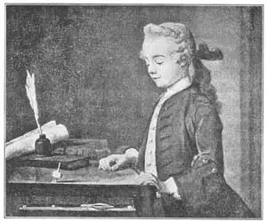

21
LANDSCAPES AND SIGN-BOARDS
风景画和广告牌

FIRE-ESCAPES are part of the scenery in a city. Landscapes are the scenery in the country. Fire-escapes have nothing to do with painting. Landscapes have a great deal to do with painting. But once upon a time landscapes had as little connection with painting as fire-escapes have now.
It seems strange that from the time the cave men made their animal pictures, thousands of years ago, all the way up to the middle of the seventeenth century, almost no one in Europe painted a real landscape. Italy had great painters during the Renaissance. Italy had beautiful landscapes. But strange to say the great painters never thought of painting the beautiful landscapes. If there was any country scenery at all in the Italian pictures, it was always as a mere background for the figures in the foreground.
The Van Eycks in Flanders had come near to real landscapes in their famous altarpiece. But the things happening in their picture were more important than the scenery.
Some landscapes had been painted in Germany about 1500, but they didn’t attract much notice.
It seems strange that the first two painters of Italian landscapes were not Italians but Frenchmen. One was named Nicolas Poussin (Poo-sanh). He was interested in the stories of the ancient Greeks and in the old Roman ruins. His pictures generally have Greeks in the foreground, but the backgrounds are true landscapes. The next picture will show you the Greeks. It is called “Shepherds of Arcadia.”
Do you know where Arcadia is? Arcadia used to be a country of ancient Greece noted for its kind, happy, simple country people and shepherds. These shepherds that Poussin painted seem to be talking about the marble tomb in the picture. One is pointing to some words on the tomb. The words can’t be read here, but in the real picture they mean, “I too have been in Arcadia.”
The other French artist who painted landscapes in Italy is known as Claude Lorrain. His real name was Claude Something Else, but as he came from Lorraine, in France, he is always called Claude Lotrain. The story goes that he was once a pastry cook and later the servant of a painter in Italy. One of his duties was to clean the paint brushes of his master. This interested him in painting. His master gave him some lessons and soon Claude Lorrain was a painter himself.
Claude Lorrain had people in his pictures, but generally they were small and unimportant. The landscape was the important thing, even more important than it had been with Poussin. So Claude Lorrain is sometimes called the father of landscape painting, He liked to paint pictures of the sea even more than landscapes, so we might call him a seascape painter too.
The next important French painter lived about a hundred years later than Poussin and Claude Lorrain. His name was Watteau. One of his paintings was on wood and was painted as a sign-board for a hat shop. Poor Watteau led a miserable life. In the beginning he was very poor. When he came to Paris to paint he worked hard, but he was paid so little he almost starved. At last, when he had come well-known as a painter and was making enough money to live comfortably, he was always so ill that he could not enjoy himself much, and finally he died of the disease that had made him ill.
Now, I’m telling you about the sad things of Watteau’s life for this reason: The pictures he painted are just the opposite from sad. The people in them are just the opposite of the kind of person Watteau was.
Instead of painting poor people, he painted young men and women clothed in silks and satins.
Instead of painting hard-working people like himself, he painted only people having a good time—dancing, picnicking, playing at garden parties, making love.
Instead of painting ugly, crude people like himself, he painted people who are almost too graceful and pretty and polite. No one could be quite so free from worries and cares as Watteau’s people are.
Chardin was another French painter who was born only a little later than Watteau. He too painted a sign-board. Perhaps he got the idea from Watteau, but Chardin’s sign was for a surgeon’s office instead of for a hat shop. It showed a crowd of people in a street looking on while a surgeon binds up the wound of a man hurt in a sword fight.
Chardin liked to paint still life. Still life means a picture of any thing without life such as fruits, dead fish, basins, cut flowers, dead rabbits or pheasants and other game, pots, pans, and so on. He was also a portrait painter. But the third kind of painting that Chardin liked to do is the kind he is best known for—scenes of people inside their houses, doing the everyday things that people do. Usually there are children in these pictures. One painting shows a mother teaching her little girls to say grace before meals, another shows a little boy spinning a top on a table, another shows a mother telling her son to be careful of his new hat when he goes out.
Though the people in Chardin’s time dressed differently from us, still we can say when we see his paintings, “Those look like real everyday people.” We feel he didn’t try to show us something astonishing or exciting, but just ordinary scenes in ordinary French families.

No.21-2 BOY WITH A TOP（《玩陀螺的男孩》） CHARDIN（夏尔丹 作）
Courtesy of The University Prints
【中文阅读】
防火梯是城市的一道风景线，而自然风光则是乡村景色的一部分。防火梯与绘画没什么关系，但自然风光与绘画却有着很大联系。不过，自然风光在过去也曾像今天的防火梯一样，与绘画几乎没任何关联。
从几千年前穴居人开始在洞穴里画动物图画以来，一直到17世纪中期，欧洲几乎没人画过一张真正的风景画，这似乎有些奇怪。文艺复兴时期意大利出了许多著名的画家，意大利的自然风景也很漂亮。但说起来真怪，这些著名的画家却从未想过把美丽的风景画到画上。即使我们在意大利画家的画中找到一两处自然风景，它们也只总是用做画面中人物的背景而已。
佛兰德斯的凡·艾克兄弟著名的祭坛画近似于真正的风景画。但是，他们画中的情节还是要比风景更为重要。
大约在16世纪时，德国画家画了一些风景画，但这些画并没有引起多少关注。
似乎很奇怪的是，意大利最早的两位风景画家并不是意大利人，而是法国人。其中一个名叫尼古拉斯·普桑，他对古希腊的故事以及古罗马的遗址十分感兴趣。他画中的前面部分一般都是希腊人，而后面的背景却是真正的自然风光。图21-1这幅画会让你看到希腊人，这幅画叫做《阿卡迪亚牧羊人》。你知道阿卡迪亚在哪吗？阿卡迪亚曾是古希腊的一个乡村，因其善良、简单、快乐的乡民和牧羊人而闻名。普桑画中的这些牧羊人似乎好像正在谈论画中的一个大理石墓碑。其中一个牧羊人指着墓碑上的文字。这些字在我们印的这幅画上是看不清的，但在原画中的意思是“我也到过阿卡迪亚”。
另一个在意大利画风景画的法国画家叫克劳德·洛兰。他本来不姓“洛兰”，但是因为他来自法国的洛兰地区，所以大家就把他叫做克劳德·洛兰。据说，他曾是个做糕点的，后来做了一个意大利画家的仆人。他有一项职责是替主人清理画笔，这慢慢激起了他对绘画的兴趣。主人教了他一些绘画知识，很快克劳德·洛兰自己也成了一名画家。
克劳德·洛兰的画中有人物，但他们总的来说都非常小，而且不怎么重要，自然风景才是重要的部分，甚至比普桑画中自然风景更加重要。所以，有时候洛兰被称为“自然风景画之父”。不过，相对于自然风景，洛兰更喜欢画海景，因此我们也可以把他叫做“海景画家”。
另外一位重要的法国画家比普桑和洛兰晚出生一百多年，他叫华托。他有一幅画是画在木板上的，是一个帽店的广告牌。可怜的华托生活十分悲惨。他一开始就生活贫困。他刚到巴黎画画时，拼命工作，但画酬少得可怜，差点死于饥饿。最后，他终于成了一位著名画家。他挣的钱足够使他过上舒适的日子时，却老是生病，没能好好地享福，最终因病而死。
我之所以给你们讲华托的这些悲惨的故事，是因为他画的画却一点都不悲伤。而且他画中的人物与他本人也完全相反。
他画那些衣着华丽的年轻男女，却不画穷人。
他不画跟他一样辛勤劳作的人们，而画那些尽情享乐的人们——他们跳舞，野餐，参加花园聚会，做爱。
他画那些优雅、漂亮和文质彬彬的人，却不画那些像他一样丑陋粗俗的人。没人能像华托画中的人物那样无忧无虑了。
夏尔丹是另外一位法国画家，出生只比华托晚一点。夏尔丹也画过一个广告牌。或许他是从华托那里获得这个创意的，不过，他的广告牌是为一个外科医生的诊所画的，并不是为帽店画的。广告牌上的外科医生正在给一个在剑斗中的伤者包扎伤口，街上一群人在围观。
夏尔丹喜欢画静物画。静物画画的是无生命之物，像水果、死鱼、盆器、剪花、死兔或野鸡，以及其他的猎物、锅碗瓢盆等。他也画肖像。但他喜欢画的同时给他带来最大名声的却是第三类画，那是室内人们一些日常生活的情景。这些画里通常都有小孩。他有幅画画的是母亲在教女儿们做餐前祷告；还有一幅画的是一个小男孩在桌上玩陀螺；另外还有一幅画的是一位母亲在她儿子出门时，叮嘱他小心自己的新帽子。
尽管夏尔丹那个时代人们的穿衣风俗跟我们现在大不一样，但我们在看他的画时，仍然会说：“这些人看起来就像日常生活中的人一样。”我们能感觉到，夏尔丹并不想向我们展示什么惊天动地的大事或一些激动人心的事，而只是想画出普通法国家庭的普通生活场景。